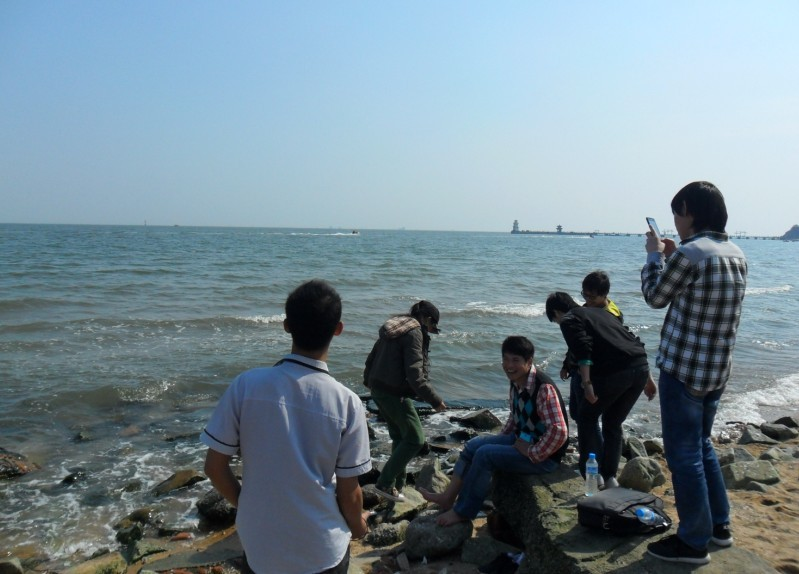

记2013年全国五子棋团体锦标赛
#1 记2013年全国五子棋团体锦标赛作者：四川连珠魂 发表时间：2013-5-5 8:41:56
（一）艰难组队
3月份得到五一期间在秦皇岛举办全国五子棋团体锦标赛的消息后棋心愉悦社团就开始了组织筹备工作，原本安排我和李一，韦振强组成棋心愉悦一队，但是后来得知港澳棋手不能参加国内的团体比赛的消息，韦振强是澳门棋手不能参赛，一队就必须重新找人替代，先是准备让江齐文加入一队，但临时祁观决定参加比赛，棋心愉悦族长郭海森几经协调最终把祁观放在了1队，江齐文被调整到了2队。在台次的确定上，本来我是准备打一台，后来考虑到上届团体赛祁观在2台发挥不是很好，就做了台次调整，我被安排在了二台，祁观担任一台，李一担任三台。就这样棋心愉悦一队艰难诞生了。
（二）出色的比赛
首轮胜利给我们增添了信心和士气，第二轮迎战茗弈刀枫二队，我的对手是刘洋，我开局选择了瑞星，对手交换，前11手正常，12手我选择了团12，13手眠3是常见的应对，14手盖头是稳健的走法，15手—26手是常见的定型，27手做双2很强硬，28手是具有反击力的应招，29手很强，黑棋伏杀，30手是强防，31手也是强招，32—34 是我思考很久后选择的定型，此时黑棋局部较优，35手很强的攻，36手是几乎唯一的防守，37手盖住眠3，38手是疑问手，赛后分析38走34上面是强防，39手做vcf ，40手正常防，41手的进攻看上去很强，42手是此时的唯一防点，43—47的快速定型欠妥，对方误算了局部的杀，走到47手后，对方再次停下来思考，此时这里已经无杀了，51手跳三，52手外挡是强防，53-56手，我感觉白棋已经安全了，此时对方又一次出现误算，57-73手一路连续冲4，当时他误认为有杀，但是74手后，他看清上面的棋空间不足，于是开始思考防守，75手是疑问手，76防住后，白棋有vcf了，77手防守后丢先，78手开始白棋进行反攻，79手—89手黑棋的防守都很强，90手白棋在左下拓展，黑棋出现了漏洞，可能是此时对方时间已经很紧张了，98手白棋一子三通后，黑棋很难防御，100手-102手白棋简明必胜，103防守后，白棋一路连攻追下取胜。另外祁观和李一也分别战胜对手，圆满取胜第二轮后，接下来的第三轮遇到了安徽棋院队。
下午4点开始了第三轮的比赛，我的对手是陈景飞，对手开局瑞星，我选择了交换，12手给了我极大的考验，我知道这手是必败，但是不记得怎么取胜，于是开始了长考，经过反复思考后选择了13-15手的定型，16手防守4，3点同时做杀，17手反3是预先想好的走法，18手-20手防守后我开始思考取胜方法，最先想到的是21手跳冲4后，23手走21的下面做v，感觉局部形状能必胜，但是算到白棋可以24走k7活三，26再往I5活三，黑棋防守后会丢先，所以放弃了这套进攻，也思考过21手在L9跳冲后的连攻方法，但是进攻选点不够全面，没算到有杀，就放弃了连攻，21手跳冲拓展形状后，23手是偏重防守的选点，24手防守斜2，25手做v,26手防守4，3点，27手组型，此手对白棋的进攻有一定的牵制作用。28手直接防守眠三，29手活三，30手选择挡上面，此时我还有10多分钟，我感到有所机会开始算杀，思考了一会儿走出了31—33的组型，此时黑棋有一套明显的vcf，白棋只能阻挡21-27-29所形成的眠3，但黑仍能走出vct.实战对手走出了弱防，35-41手vcf取得胜利。顺利取胜第三轮后，我和我的队友都很疲惫了，得知第四轮应战炫飞2队时我还是难免有所担心，因为对手是曹冬，他开局。晚上我看了看松月等优势开局后便睡了。
30号早上7点多起床，洗簌完毕下楼吃早点，然后又回寝室看了会儿棋谱，快到8点的时候才进入赛场，比赛开始，曹冬思考片刻开局瑞星，我选择了交换，12手曹冬走出眠3，我想可能考验会在后面，13手正常应对，14手做双2是较弱的一手，以前比赛我也遇到过，15手—19手定型后，20手弱防，我知道是必败的，于是开始思考取胜方法，21手是比较关键的一手，如果直接冲4，跳三进攻，后续发展黑棋不利。22手防守后，我继续长考，23手斜活3是必然的一手，我一直在思考后续的进攻，当发现29的妙手后，取胜思路就清晰了，30-32手是必须的交换，33手叫v，白棋只能防守4，3点，35手活三后，白棋只能防右边，黑棋后面有一套vct。曹冬也看到了黑棋的取胜手段，于是投子认负了。这盘棋赢得很侥幸，曹冬在变化选择上出现了失误，不然将会是一场苦战。在我取胜之后，祁观那盘殷老师超时了，李一艰难战胜了云飞，这样我们队3：0取得了这轮的胜利。
第五轮遇上了妙手俱乐部队，我的对手是周可鼎，我和周可鼎曾数次交手，运气总是在我这边，所以在心理上我没压力，比赛开始，周可鼎开局斜月，我选择交换，第4手正常，第五手对方选择保留了一打点，我知道考验又来了，没办法只有接招，第6手变招，这下通型到云雨月2打必胜变化里面，我不记得必胜的走法，按照正常的思路7-15手都还是定式走法，16手防守后，我思考了片刻直接挡住了白棋的活2，其实这里应该仔细计算一下，黑棋可以连攻取胜，错过机会后，18-20手的防守，又给黑棋带来了又一次的取胜机会，我又一次算杀，发现有1个类似花月的必胜型，于是走了21-25的定型，26手唯一，我有点郁闷，怎么算黑棋局部都没法取胜，于是转身27在E9做棋，28手挡住黑棋的眠三，我又感觉有机会了，就在思考上下的连接，此时出现了1个误算，走到31手我误认为必胜了，后来细算发现白棋有反4。。。周可鼎也看到了反4，他稍稍松了口气，33手下跳3我原本的想法是白棋挡下面，我可以先D10跳冲4处理上面，然后再防守下面，不过即使这样黑棋也很难防御，白棋外势很厚，但是周可鼎此时贪心了，他没细算下面的黑棋进攻，认为这手挡中间，左上局部白棋有攻，右下白棋也可以攻，这样黑棋无法兼顾，对自身更有利，可是在他防守跳三中间的时候，我发现了黑棋有1个精彩的vct，后面的vcf比较隐蔽，我事前也没想到，呵呵。39手后，周可鼎也发现了黑棋的vcf于是认输了，这盘棋双方都出现几次的失误，最终我运气好一点，我取胜后，李一战胜了黄圣明，祁观在和芦海的对局中漏杀1次，最终败于对手。这样我队以2：1的比分取得本轮胜利。
第六轮对阵上海市棋牌运动管理中心一队，我的对手是顾炜老师。比赛开始顾炜老师开局瑞星，我选择了交换，12手团角，13手我选择了横活3的变化，14手正常，15手我选择做跳眠三的变化，16手-18手是较老的变化，19手最强，20手的防点我以前并未下过，感觉不太强，于是做了21-23的交换，24手的防守很强，25手是控制的走法，26-28的防守把局部防处理得很好，黑棋在上面没有任何机会。29-31手在上面定型后，33手转身在下面交换是必要的。36手后，37手我选择了防守性的走法，38手挡住黑棋斜眠三，39-47的交换，黑棋下方已经安全了。48手，49手交换以后，白棋在左边开始拓展，51手的防守比较强，52-56白棋定型后，57手黑棋占据要点，此时黑棋左上已经安全。58手-64手的交换定型后，65手防守住横线跳眠三，左下黑棋也安全了。66手转身在右上做棋，67手防守要点，68-69手交换后，右上黑棋也安定了，后来白棋在右边进攻无果，最终握手言和。李一再次神勇的战胜了李洪斌老师，祁观和朱建锋战成平手，最终我队以2：1的比分取得了此轮比赛的胜利，这样我队6连胜，已经提前一轮夺冠。晚上棋心愉悦社团的所有参赛人员一起在饭店聚餐庆贺，都很开心，很晚才入睡。
五月一号早上迎来了最后一轮的比赛，我队对阵茗弈刀枫一队，我的对手是刘杰，我开局瑞星，对手没有交换，12手团角，我13手仍然选择了横活3，14手挡左边，15手做跳眠三，16手白棋跳3，17手防中间，18手-20手的防御很强，21手叫v，22手挡住横线眠3，23手挡住上方的白棋斜2，24手很强，25手活3，26手外挡偏弱，我感觉黑棋有点机会，于是思考了一下黑棋的进攻，27手是隐蔽性的一手，黑棋埋伏了一套vct，对方这里陷入了长考，28-32的防御很强，我思考了一下走出了33-35的定型，36手的防守感觉不太强，发现白棋下面竖线眠3对黑棋的进攻有所影响，所以选择了37-39的交换，40手防守下方后，41手转身在左上做棋，42-45交换后，46手白棋在右上防御，此时黑棋继续进攻不是很有利，于是选择了防守，经过47-86的交换，最终握手言和。祁观和李一分别战胜了对手，这样我队以2,5比0.5的比分赢得了最后一轮的胜利。
七轮全胜的战绩是意外的惊喜，三台李一以7连胜的成绩获得了最佳台次，我个人5胜2和也比较满意，我们荣获冠军后，社团的参赛队员都很开心。
团体前三名领奖
棋心愉悦社团参赛选手合影
（三）东临碣石以观沧海
五月一号下午棋心愉悦大部分参赛棋手（有选手提前返程比如李一）一起到海边游玩，坐船，拾贝，海滩漫步，摄影留念。大家玩得十分开心，离开时还在路边的摊点购买了纪念品。这次全团赛可以说收获良多，期待大家在6月份举办的全国个人公开赛中再相聚。

［ 何柔 于 2013-5-5 8:59:26 时花20金币送鲜花一朵］
［ 何柔 于 2013-5-5 8:59:26 时花20金币送鲜花一朵］
［ 何柔 于 2013-5-5 8:59:26 时花20金币送鲜花一朵］
［ 屏蔽 于 2013-5-5 9:19:06 时花20金币送鲜花一朵］
［ 屏蔽 于 2013-5-5 9:19:06 时花20金币送鲜花一朵］
［ 暮雨迟 于 2013-5-5 11:00:46 时花20金币送鲜花一朵］
［ 冰雪笑醉 于 2013-5-5 16:24:01 时花20金币送鲜花一朵］
［ 冰雪笑醉 于 2013-5-5 16:24:01 时花20金币送鲜花一朵］
［ 冰雪笑醉 于 2013-5-5 16:24:01 时花20金币送鲜花一朵］
［ 冰雪笑醉 于 2013-5-5 16:24:01 时花20金币送鲜花一朵］
［ 冰雪笑醉 于 2013-5-5 16:24:01 时花20金币送鲜花一朵］
［ 圊籽 于 2013-5-6 18:50:35 时花20金币送鲜花一朵］
［ 圊籽 于 2013-5-6 18:50:35 时花20金币送鲜花一朵］
［ 圊籽 于 2013-5-6 18:50:35 时花20金币送鲜花一朵］
［ 吉小鼠 于 2013-5-7 0:39:50 时花20金币送鲜花一朵］
［ 吉小鼠 于 2013-5-7 0:39:50 时花20金币送鲜花一朵］
［ 吉小鼠 于 2013-5-7 0:39:50 时花20金币送鲜花一朵］
［ 吉小鼠 于 2013-5-7 0:39:50 时花20金币送鲜花一朵］
［ 吉小鼠 于 2013-5-7 0:39:50 时花20金币送鲜花一朵］
［ 吉小鼠 于 2013-5-7 0:39:50 时花20金币送鲜花一朵］
［ 吉小鼠 于 2013-5-7 0:39:50 时花20金币送鲜花一朵］
［ 吉小鼠 于 2013-5-7 0:39:50 时花20金币送鲜花一朵］
［ 吉小鼠 于 2013-5-7 0:39:50 时花20金币送鲜花一朵］
［ 淡月疏星 于 2013-5-7 8:46:53 时奖励此帖[金币加 100 威望加1］
［ 淡月疏星 于 2013-5-7 9:13:20 时花20金币送鲜花一朵］
［ 淡月疏星 于 2013-5-7 9:13:20 时花20金币送鲜花一朵］
［ 淡月疏星 于 2013-5-7 9:13:20 时花20金币送鲜花一朵］
［ 淡月疏星 于 2013-5-7 9:13:20 时花20金币送鲜花一朵］
［ 淡月疏星 于 2013-5-7 9:13:20 时花20金币送鲜花一朵］
#2 Re:记2013年全国五子棋团体锦标赛作者：蘭妮 发表时间：2013-5-5 19:06:03
似乎大家都去了楊少怡飯店 XD#3 Re:蘭妮【==Re:记2013年全国五子棋团体锦标赛==】作者：奇林 发表时间：2013-5-5 23:30:18
引用：好眼力
原文由 蘭妮 发表于 2013-5-5 19:06:03 :
似乎大家都去了楊少怡飯店 XD
#4 Re:记2013年全国五子棋团体锦标赛作者：吉小鼠 发表时间：2013-5-6 4:53:45
兰老师威武！公开赛我也想去有木有…(>_<)#5 Re:记2013年全国五子棋团体锦标赛作者：圊籽 发表时间：2013-5-6 18:52:58
聚餐那天是睡得很晚。。青子凌晨2点闲得无聊躺床上听你们不知道是电视还是讨论棋来着。。